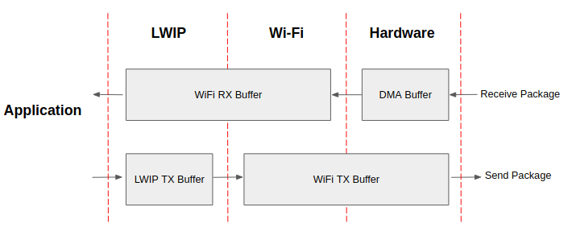

Wi-Fi Performance and Power Save
Wi-Fi Buffer Usage
This section is only about the dynamic buffer configuration.
Why Buffer Configuration Is Important
In order to get a high-performance system, consider the memory usage/configuration carefully for the following reasons:
the available memory in ESP32-C3 is limited.
currently, the default type of buffer in LwIP and Wi-Fi drivers is "dynamic", which means that both the LwIP and Wi-Fi share memory with the application. Programmers should always keep this in mind; otherwise, they will face a memory issue, such as "running out of heap memory".
it is very dangerous to run out of heap memory, as this will cause ESP32-C3 an "undefined behavior". Thus, enough heap memory should be reserved for the application, so that it never runs out of it.
the Wi-Fi throughput heavily depends on memory-related configurations, such as the TCP window size and Wi-Fi RX/TX dynamic buffer number.
the peak heap memory that the ESP32-C3 LwIP/Wi-Fi may consume depends on a number of factors, such as the maximum TCP/UDP connections that the application may have.
the total memory that the application requires is also an important factor when considering memory configuration.
Due to these reasons, there is not a good-for-all application configuration. Rather, it is recommended to consider memory configurations separately for every different application.
Dynamic vs. Static Buffer
The default type of buffer in Wi-Fi drivers is "dynamic". Most of the time the dynamic buffer can significantly save memory. However, it makes the application programming a little more difficult, because in this case the application needs to consider memory usage in Wi-Fi.
lwIP also allocates buffers at the TCP/IP layer, and this buffer allocation is also dynamic. See lwIP documentation section about memory use and performance.
Peak Wi-Fi Dynamic Buffer
The Wi-Fi driver supports several types of buffer (refer to Wi-Fi Buffer Configure). However, this section is about the usage of the dynamic Wi-Fi buffer only. The peak heap memory that Wi-Fi consumes is the theoretically-maximum memory that the Wi-Fi driver consumes. Generally, the peak memory depends on:
\(b_{rx}\) the number of dynamic RX buffers that are configured
\(b_{tx}\) the number of dynamic TX buffers that are configured
\(m_{rx}\) the maximum packet size that the Wi-Fi driver can receive
\(m_{tx}\) the maximum packet size that the Wi-Fi driver can send
So, the peak memory that the Wi-Fi driver consumes (\(p\)) can be calculated with the following formula:
Generally, the dynamic TX long buffers and dynamic TX long long buffers can be ignored, because they are management frames which only have a small impact on the system.
ESP32-C3 Wi-Fi Throughput
The table below shows the best throughput results gained in Espressif's lab and in a shielded box.
Type/Throughput
Air In Lab
Shield-box
Test Tool
IDF Version (commit ID)
Raw 802.11 Packet RX
N/A
130 MBit/s
Internal tool
NA
Raw 802.11 Packet TX
N/A
130 MBit/s
Internal tool
NA
UDP RX
30 MBit/s
50 MBit/s
iperf example
15575346
UDP TX
30 MBit/s
40 MBit/s
iperf example
15575346
TCP RX
20 MBit/s
35 MBit/s
iperf example
15575346
TCP TX
20 MBit/s
37 MBit/s
iperf example
15575346
When the throughput is tested by iperf example, the sdkconfig is examples/wifi/iperf/sdkconfig.defaults.esp32c3.
How to Improve Wi-Fi Performance
The performance of ESP32-C3 Wi-Fi is affected by many parameters, and there are mutual constraints between each parameter. A proper configuration cannot only improve performance, but also increase available memory for applications and improve stability.
This section briefly explains the operating mode of the Wi-Fi/LwIP protocol stack and the role of each parameter. It also gives several recommended configuration ranks to help choose the appropriate rank according to the usage scenario.
Protocol Stack Operation Mode

ESP32-C3 datapath
The ESP32-C3 protocol stack is divided into four layers: Application, LwIP, Wi-Fi, and Hardware.
During receiving, hardware puts the received packet into DMA buffer, and then transfers it into the RX buffer of Wi-Fi and LwIP in turn for related protocol processing, and finally to the application layer. The Wi-Fi RX buffer and the LwIP RX buffer shares the same buffer by default. In other words, the Wi-Fi forwards the packet to LwIP by reference by default.
During sending, the application copies the messages to be sent into the TX buffer of the LwIP layer for TCP/IP encapsulation. The messages will then be passed to the TX buffer of the Wi-Fi layer for MAC encapsulation and wait to be sent.
Parameters
Increasing the size or number of the buffers mentioned above properly can improve Wi-Fi performance. Meanwhile, it will reduce available memory to the application. The following is an introduction to the parameters that users need to configure:
RX direction:
- CONFIG_ESP_WIFI_STATIC_RX_BUFFER_NUM
This parameter indicates the number of DMA buffer at the hardware layer. Increasing this parameter will increase the sender's one-time receiving throughput, thereby improving the Wi-Fi protocol stack ability to handle burst traffic.
- CONFIG_ESP_WIFI_DYNAMIC_RX_BUFFER_NUM
This parameter indicates the number of RX buffer in the Wi-Fi layer. Increasing this parameter will improve the performance of packet reception. This parameter needs to match the RX buffer size of the LwIP layer.
- CONFIG_ESP_WIFI_RX_BA_WIN
This parameter indicates the size of the AMPDU BA Window at the receiving end. This parameter should be configured to the smaller value between twice of CONFIG_ESP_WIFI_STATIC_RX_BUFFER_NUM and CONFIG_ESP_WIFI_DYNAMIC_RX_BUFFER_NUM.
- CONFIG_LWIP_TCP_WND_DEFAULT
This parameter represents the RX buffer size of the LwIP layer for each TCP stream. Its value should be configured to the value of WIFI_DYNAMIC_RX_BUFFER_NUM (KB) to reach a high and stable performance. Meanwhile, in case of multiple streams, this value needs to be reduced proportionally.
TX direction:
- CONFIG_ESP_WIFI_TX_BUFFER
This parameter indicates the type of TX buffer, it is recommended to configure it as a dynamic buffer, which can make full use of memory.
- CONFIG_ESP_WIFI_DYNAMIC_TX_BUFFER_NUM
This parameter indicates the number of TX buffer on the Wi-Fi layer. Increasing this parameter will improve the performance of packet sending. The parameter value needs to match the TX buffer size of the LwIP layer.
- CONFIG_LWIP_TCP_SND_BUF_DEFAULT
This parameter represents the TX buffer size of the LwIP layer for each TCP stream. Its value should be configured to the value of WIFI_DYNAMIC_TX_BUFFER_NUM (KB) to reach a high and stable performance. In case of multiple streams, this value needs to be reduced proportionally.
Throughput optimization by placing code in IRAM:
Note
The buffer size mentioned above is fixed as 1.6 KB.
How to Configure Parameters
The memory of ESP32-C3 is shared by protocol stack and applications.
Here, several configuration ranks are given. In most cases, the user should select a suitable rank for parameter configuration according to the size of the memory occupied by the application.
The parameters not mentioned in the following table should be set to the default.
Rank |
Iperf |
Default |
Minimum |
|---|---|---|---|
Available memory (KB) |
59 |
160 |
180 |
WIFI_STATIC_RX_BUFFER_NUM |
20 |
8 |
3 |
WIFI_DYNAMIC_RX_BUFFER_NUM |
40 |
16 |
6 |
WIFI_DYNAMIC_TX_BUFFER_NUM |
40 |
16 |
6 |
WIFI_RX_BA_WIN |
32 |
16 |
6 |
TCP_SND_BUF_DEFAULT (KB) |
40 |
16 |
6 |
TCP_WND_DEFAULT (KB) |
40 |
16 |
6 |
LWIP_IRAM_OPTIMIZATION |
ENABLE |
ENABLE |
DISABLE |
TCP TX throughput (Mbit/s) |
38.1 |
27.2 |
20.4 |
TCP RX throughput (Mbit/s) |
35.3 |
24.2 |
17.4 |
UDP TX throughput (Mbit/s) |
40.6 |
38.9 |
34.1 |
UDP RX throughput (Mbit/s) |
52.4 |
44.5 |
44.2 |
Note
The test was performed with a single stream in a shielded box using an ASUS RT-N66U router. ESP32-C3's CPU is single core with 160 MHz. ESP32-C3's flash is in QIO mode with 80 MHz.
Ranks:
- Iperf rank
ESP32-C3 extreme performance rank used to test extreme performance.
- Default rank
ESP32-C3's default configuration rank, the available memory, and performance are in balance.
- Minimum rank
This is the minimum configuration rank of ESP32-C3. The protocol stack only uses the necessary memory for running. It is suitable for scenarios where there is no requirement for performance and the application requires lots of space.
ESP32-C3 Wi-Fi Power-saving Mode
This subsection will briefly introduce the concepts and usage related to Wi-Fi Power Saving Mode, for a more detailed introduction please refer to the Low Power Mode User Guide.
Station Sleep
Currently, ESP32-C3 Wi-Fi supports the Modem-sleep mode which refers to the legacy power-saving mode in the IEEE 802.11 protocol. Modem-sleep mode works in station-only mode and the station must connect to the AP first. If the Modem-sleep mode is enabled, station will switch between active and sleep state periodically. In sleep state, RF, PHY and BB are turned off in order to reduce power consumption. Station can keep connection with AP in modem-sleep mode.
Modem-sleep mode includes minimum and maximum power-saving modes. In minimum power-saving mode, station wakes up every DTIM to receive beacon. Broadcast data will not be lost because it is transmitted after DTIM. However, it cannot save much more power if DTIM is short for DTIM is determined by AP.
In maximum power-saving mode, station wakes up in every listen interval to receive beacon. This listen interval can be set to be longer than the AP DTIM period. Broadcast data may be lost because station may be in sleep state at DTIM time. If listen interval is longer, more power is saved, but broadcast data is more easy to lose. Listen interval can be configured by calling API esp_wifi_set_config() before connecting to AP.
Call esp_wifi_set_ps(WIFI_PS_MIN_MODEM) to enable Modem-sleep minimum power-saving mode or esp_wifi_set_ps(WIFI_PS_MAX_MODEM) to enable Modem-sleep maximum power-saving mode after calling esp_wifi_init(). When station connects to AP, Modem-sleep will start. When station disconnects from AP, Modem-sleep will stop.
Call esp_wifi_set_ps(WIFI_PS_NONE) to disable Modem-sleep mode entirely. Disabling it increases power consumption, but minimizes the delay in receiving Wi-Fi data in real time. When Modem-sleep mode is enabled, the delay in receiving Wi-Fi data may be the same as the DTIM cycle (minimum power-saving mode) or the listening interval (maximum power-saving mode).
Note that in coexist mode, Wi-Fi will remain active only during Wi-Fi time slice, and sleep during non Wi-Fi time slice even if esp_wifi_set_ps(WIFI_PS_NONE) is called. Please refer to coexist policy.
The default Modem-sleep mode is WIFI_PS_MIN_MODEM.
AP Sleep
Currently, ESP32-C3 AP does not support all of the power-saving feature defined in Wi-Fi specification. To be specific, the AP only caches unicast data for the stations connect to this AP, but does not cache the multicast data for the stations. If stations connected to the ESP32-C3 AP are power-saving enabled, they may experience multicast packet loss.
In the future, all power-saving features will be supported on ESP32-C3 AP.
Disconnected State Sleep
Disconnected state is the duration without Wi-Fi connection between esp_wifi_start() to esp_wifi_stop().
Currently, ESP32-C3 Wi-Fi supports sleep mode in disconnected state if running at station mode. This feature could be configured by Menuconfig choice CONFIG_ESP_WIFI_STA_DISCONNECTED_PM_ENABLE.
If CONFIG_ESP_WIFI_STA_DISCONNECTED_PM_ENABLE is enabled, RF, PHY and BB would be turned off in disconnected state when IDLE. The current would be same with current at modem-sleep.
The choice CONFIG_ESP_WIFI_STA_DISCONNECTED_PM_ENABLE would be selected by default, while it would be selected forcefully in Menuconfig at coexistence mode.
Connectionless Modules Power-saving
Connectionless modules are those Wi-Fi modules not relying on Wi-Fi connection, e.g ESP-NOW, DPP, FTM. These modules start from esp_wifi_start(), working until esp_wifi_stop().
Currently, if ESP-NOW works at station mode, its supported to sleep at both connected state and disconnected state.
Connectionless Modules TX
For each connectionless module, its supported to TX at any sleeping time without any extra configuration.
Meanwhile, esp_wifi_80211_tx() is supported at sleep as well.
Connectionless Modules RX
For each connectionless module, two parameters shall be configured to RX at sleep, which are Window and Interval.
At the start of Interval time, RF, PHY, BB would be turned on and kept for Window time. Connectionless Module could RX in the duration.
Interval
There is only one Interval. Its configured by
esp_wifi_set_connectionless_interval(). The unit is milliseconds.The default value of Interval is ESP_WIFI_CONNECTIONLESS_INTERVAL_DEFAULT_MODE.
Event WIFI_EVENT_CONNECTIONLESS_MODULE_WAKE_INTERVAL_START would be posted at the start of Interval. Since Window also starts at that moment, its recommended to TX in that event.
At connected state, the start of Interval would be aligned with TBTT. To improve the packet reception success rate in connectionless modules, the sender and receiver can be connected to the same AP, and packets can be transmitted within the event WIFI_EVENT_CONNECTIONLESS_MODULE_WAKE_INTERVAL_START. This synchronization helps align the connectionless modules transmission window.
Window
Each connectionless module has its own Window after start. Connectionless Modules Power-saving would work with the max one among them.
Window is configured by
module_name_set_wake_window(). The unit is milliseconds.The default value of Window is the maximum.
Interval |
|||
|
1 - maximum |
||
Window |
0 |
not used |
|
1 - maximum |
default mode |
used periodically (Window < Interval) / used all time (Window ≥ Interval) |
|
Default Mode
If Interval is ESP_WIFI_CONNECTIONLESS_INTERVAL_DEFAULT_MODE with non-zero Window, Connectionless Modules Power-saving would work in default mode.
In default mode, RF, PHY, BB would be kept on if no coexistence with non-Wi-Fi protocol.
With coexistence, RF, PHY, BB resources are allocated by coexistence module to Wi-Fi connectionless module and non-Wi-Fi module, using time-division method. In default mode, Wi-Fi connectionless module is allowed to use RF, BB, PHY periodically under a stable performance.
Its recommended to configure Connectionless Modules Power-saving to default mode if there is Wi-Fi connectionless module coexists with non-Wi-Fi module.